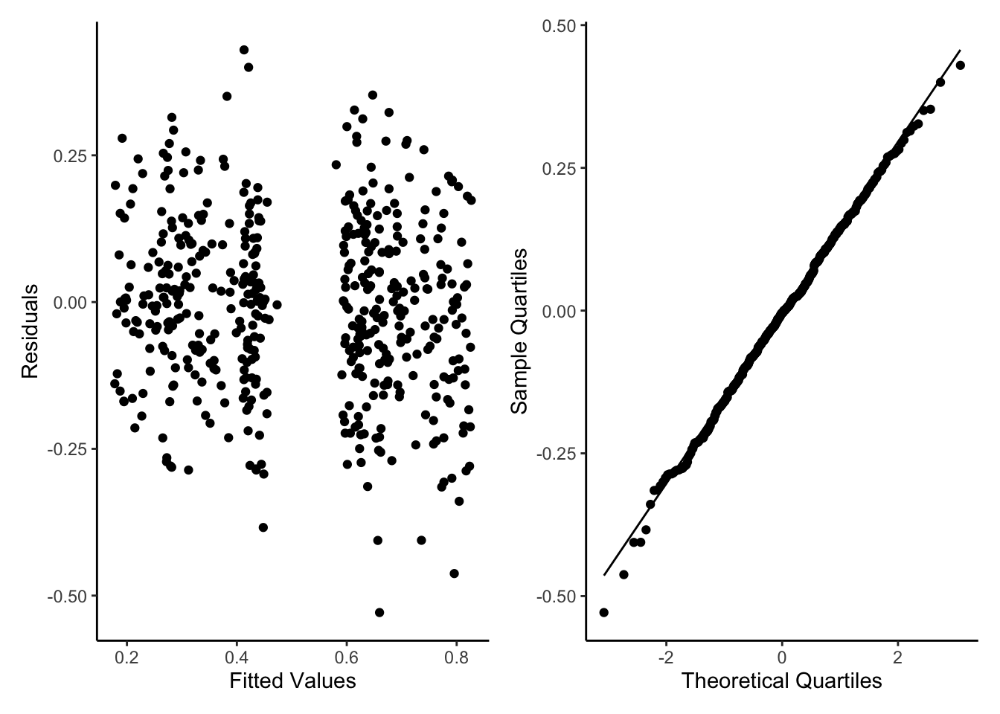

An Introduction to General Linear Mixed Effect Models (GLMMs) in R.
Published
April 16, 2024
GLMMs
What are GLMMs?
General (or Generalised) Linear Mixed Effects Models (GLMMs) (sometimes called hierarchical models or multi-level models) are an extension on GLMs. They are a method of adding more complex model structure into account, with addition of random effects (sometimes called partial pooling or shrinkage). This means that when our data have some form of structure that isn’t our main question of interest we can tell the model about this structure, thus more correctly estimating our effects of interest (fixed effects). I will use the terms fixed and random effects to follow the nomenclature of the GLM tutorials, but there could be other names such as predictor variables, partial pooling variables etc. For a full FAQ of GLMMs by Ben Bolker go here: https://bbolker.github.io/mixedmodels-misc/glmmFAQ.html
General Workflow of GLMMs
GLMMs follow an almost identical workflow as GLMs with:
Statistical Model Formulation
Response Variable Distribution
Organising Fixed Effects (and Random Effects)
Assessing Model Functioning
Model Interpretation
We went through these steps excessively in GLM tutorials and for GLMMs the only differences will be the Statistical Model Formulation (1.), Organising Effects (3.) and Model Interpretation (5.). The other steps will stay almost identical and therefore I won’t focus too much on them here (Go back to GLM tutorials for full explanations).
When to use a Random Effect?
Generally, we want to use random effects when we have some sort of grouping of variables (maybe spatial or temporal) that means each of our fixed effects are no longer independent; this might be some repeat measurement over time or perhaps different sub populations over a wider area. In these two examples we would expect values to be related within the same individual over time or within the same sub population. Therefore we need to tell our model that some correlation/variance can be explained by some grouping variable (the individual or sub population). It is worth noting that the name ‘random effect’ does not infer any mathematica randomness of the data within it, it is just the naming convention used. There are reasons behind its naming but they are long and not important for now.
There are three popular ways to add random effects into a model: allow varying intercepts, allow varying slopes or allow varying intercepts and slopes across groups. The data we will be using in this tutorial are from another tutorial here: https://ourcodingclub.github.io/tutorials/mixed-models/. So lets go into examples of intercept, slopes and intercept-slope random effects in relation to a dataset. The data we will use are to do with intelligence of dragons, their size in bodylength, which mountain range they come from and which site within that mountain range. Lets download the data into our base directory then load it into r. If this doesn’t work follow the URL and it will download the data for you and you can bring it into r in whatever way you prefer.
testScore bodyLength mountainRange X site
1 16.147309 165.5485 Bavarian NA a
2 33.886183 167.5593 Bavarian NA a
3 6.038333 165.8830 Bavarian NA a
4 18.838821 167.6855 Bavarian NA a
5 33.862328 169.9597 Bavarian NA a
6 47.043246 168.6887 Bavarian NA a
We are interested in the effect that bodylength has on test score of dragons. So following our glm tutorials from before we might apply a beta GLM (scores are percentages that include 0 and 100 but we will divide by 100 to be between 0 and 1, we will also apply a very small conversion so the 0s are never fully 0 and 1 never fully 1). Lets ignore model assessment for now and skip straight to interpretation. I will also create a siteUnique column for later on when we do a full model.
# install.packages("mgcv")library(tidyverse)library(mgcv)dragons_1<-dragons %>%mutate(testScore=case_when(testScore/100==0~0.0001, testScore/100==1~0.9999,TRUE~testScore/100),siteUnique=interaction(mountainRange,site))glm1 <-gam(testScore ~ bodyLength, data = dragons_1, family =betar(link="logit"))NewData_1<-expand_grid(bodyLength=seq(min(dragons$bodyLength),max(dragons$bodyLength),length.out=50) )Pred<-predict(glm1,NewData_1,se.fit=T,type="response")NewData<-NewData_1 %>%mutate(response=Pred$fit,se.fit=Pred$se.fit,Upr=response+(se.fit*1.96),Lwr=response-(se.fit*1.96)) ggplot(NewData)+geom_ribbon(aes(x=bodyLength,ymax=Upr,ymin=Lwr),alpha=0.7,fill="darkcyan")+geom_line(aes(x=bodyLength,y=response))+geom_point(data=dragons_1,aes(x=bodyLength,y=testScore))+labs(x="Body Length",y="Response Variable (Test Score)")+theme_classic()
Okay so there seems to be an apparent increase in test score with increasing body length. And even if we check the diagnostic plots this seems fine (not amazing but perhaps acceptable).
However, if we perhaps plot the different mountain ranges as different colours in our interpretation plot we might see some issues. There seems to be some specific mountain ranges with both lower body length and test scores (Bavarian and Southern) and some that are higher in both (Central). Our model really doesn’t seem to fit the different patterns in our different mountains, or even the sites within those mountains.
So we can see that both mountain range and site within mountain range have some element of grouping. Yet we are not necessarily interested in which mountain range has the strongest effect of bodylength on test score. So we want to add our mountain range (and maybe our site) into our model, but not as fixed effects: here come the random effects.
For correctly formulating our statistical model we need to also define how we think our mountain range changes the fixed effects. This is where we chose varying intercept, varying slope or varying intercept and slope. If we expect the overall effect of body length on test score to be equivalent but that some mountain ranges may score higher or lower on tests overall we would chose a varying intercept model. If we think that each mountain has the same background level of testscore ability but that the effect of bodylength will vary (positive effect, negative effect, no effect) depending on the mountain range, we would select a varying slope model, and finally if we think that the effect of bodylength on testscore and the background level of testscore will change with mountain range we would chose a slope and intercept varying model.
Random Intercept
First Step of Analysis - Statistical Model Formulation
Okay, lets say we think the effect of bodylength is consistent accross mountain ranges but the level of test ability is not.
This would create a stats model of:
testScore ~ bodyLength + (1|mountainRange)
Here we use the notation of (1|grouping) for our random effect. Everything after the vertical line is related to the intercept and everything before is related to the slope.
Second Step of Analysis - Response Variable Distribution
As we said earlier this is the same as GLMs, our response variable is a continuous value between an upper and low bound and therefore is a beta distribution.
Third Step of Analysis - Organising Fixed Effects (and Random Effects)
We could perhaps do some scaling of body size but we will keep things simple with the raw data. We do need to make sure our random variable is classed as a factor but that is already the case so no need to worry.
Fourth Step of Analysis - Assessing Model Functioning
So lets run our new formula as a GLMM and run some simple diagnostic plots as with GLMs. We will use the glmmTMB package to use the glmmTMB() function as it allows the use of beta regression. To do this we install TMB then glmmTMB. The diagnostics are not perfect but again we will accept them for now. Those extreme values are due to the 0s and 1s we converted, for a better model we might want to do some sort of hurdle/zero_one_inflated beta model, for now it should be fine.
#install.packages("TMB", type="source")#install.packages("glmmTMB", type="source")library(glmmTMB)glmm1<-glmmTMB(testScore ~ bodyLength+ (1|mountainRange), data = dragons_1, family = beta_family)glmm1ModelOutputs<-data.frame(Fitted=fitted(glmm1),Residuals=resid(glmm1))p5<-ggplot(glmm1ModelOutputs)+geom_point(aes(x=Fitted,y=Residuals))+theme_classic()+labs(y="Residuals",x="Fitted Values")p6<-ggplot(glmm1ModelOutputs) +stat_qq(aes(sample=Residuals))+stat_qq_line(aes(sample=Residuals))+theme_classic()+labs(y="Sample Quartiles",x="Theoretical Quartiles")p3+p4
Fifth Step of Analysis - Model Interpretation
Again, as with GLMs, we make an ‘empty’ data frame with all the fixed effects values from the original data set, but we also have to include the random effects (mountain range) too. So we are not predicting outside of the range of the data from within each mountain range we will group by mountain range and use data_grid() from the modelr package to create our ‘newdata’. This shows us that with an intercept varying model there is no effect of bodylength on test score.
But what if we thought the effect would change but that background testscores are the same across mountain ranges?
Random Slope
First Step of Analysis - Statistical Model Formulation
Okay, we think the effect of bodylength isn’t consistent accross mountain ranges but the level of test ability is.
This would create a stats model of:
testScore ~ bodyLength + (bodyLength|1)
Here we use the notation of (effectValue|1) for our random effect. Everything before the vertical line is related to the slope and everything after is related to the intercept.
Second Step of Analysis - Response Variable Distribution
See above.
Third Step of Analysis - Organising Fixed Effects (and Random Effects)
See above.
Fourth Step of Analysis - Assessing Model Functioning
So lets run our new formula as a GLMM and run some simple diagnostic plots as with GLMs. We will use the glmmTMB package to use the glmmTMB() function as it allows the use of beta regression. To do this we install TMB then glmmTMB. The diagnostics are a lot better now but still not perfect.
glmm2<-glmmTMB(testScore ~ bodyLength+ (bodyLength|1), data = dragons_1, family = beta_family)glmm2ModelOutputs<-data.frame(Fitted=fitted(glmm2),Residuals=resid(glmm2))p5<-ggplot(glmm2ModelOutputs)+geom_point(aes(x=Fitted,y=Residuals))+theme_classic()+labs(y="Residuals",x="Fitted Values")p6<-ggplot(glmm2ModelOutputs) +stat_qq(aes(sample=Residuals))+stat_qq_line(aes(sample=Residuals))+theme_classic()+labs(y="Sample Quartiles",x="Theoretical Quartiles")p5+p6
Fifth Step of Analysis - Model Interpretation
We use the same ‘newdata’ but use the slope varying model to predict. This shows us that with a slope varying model there is an effect of bodylength on test score.
Second Step of Analysis - Response Variable Distribution
See above.
Third Step of Analysis - Organising Fixed Effects (and Random Effects)
See above.
Fourth Step of Analysis - Assessing Model Functioning
So lets run our new formula as a GLMM and run some simple diagnostic plots as with GLMs. We will use the glmmTMB package to use the glmmTMB() function as it allows the use of beta regression. To do this we install TMB then glmmTMB. The diagnostics are even better than previously but still an odd gap in the middle (maybe our site level difference/heirachry is a problem).
glmm3<-glmmTMB(testScore ~ bodyLength+ (bodyLength|mountainRange), data = dragons_1, family = beta_family)glmm3ModelOutputs<-data.frame(Fitted=fitted(glmm3),Residuals=resid(glmm3))p7<-ggplot(glmm3ModelOutputs)+geom_point(aes(x=Fitted,y=Residuals))+theme_classic()+labs(y="Residuals",x="Fitted Values")p8<-ggplot(glmm3ModelOutputs) +stat_qq(aes(sample=Residuals))+stat_qq_line(aes(sample=Residuals))+theme_classic()+labs(y="Sample Quartiles",x="Theoretical Quartiles")p7+p8

Fifth Step of Analysis - Model Interpretation
Again, as with GLMs, we make an ‘empty’ data frame with all the fixed effects values from the original data set, but we also have to include the random effects (mountain range) too. So we are not predicting outside of the range of the data from within each mountain range we will group by mountain range and use data_grid() from the modelr package to create our ‘newdata’. This shows us that with a slope and intercept varying model there are different effects of bodylength on testscore depending on different mountain ranges.
This model also shows no effect of bodylength on test score when using a slope and intercept varying model. However, this still hasn’t fully captured the hierarchy of the data, we have a site column that has not been considered.
Lets do a final full model.
Final Full Model
First Step of Analysis - Statistical Model Formulation
Okay, lets say we think the effect of bodylength isn’t consistent across mountain ranges nor is level of test ability and unique Sites have differing intercepts too.
Here we add in another intercept term. We use the unique version of site as site was originally nested in the mountainRange column (there was a, b and c in all mountain ranges but they were not the same).
Second Step of Analysis - Response Variable Distribution
Same as above.
Third Step of Analysis - Organising Fixed Effects (and Random Effects)
Same as above.
Fourth Step of Analysis - Assessing Model Functioning
So lets run our new formula as a GLMM and run some simple diagnostic plots as with GLMs. We will use the glmmTMB package to use the glmmTMB() function as it allows the use of beta regression. To do this we install TMB then glmmTMB. The diagnostics are even better than previously.
glmm4<-glmmTMB(testScore ~ bodyLength+ (bodyLength|mountainRange)+(1|siteUnique), data = dragons_1, family = beta_family)glmm4ModelOutputs<-data.frame(Fitted=fitted(glmm4),Residuals=resid(glmm4))p9<-ggplot(glmm4ModelOutputs)+geom_point(aes(x=Fitted,y=Residuals))+theme_classic()+labs(y="Residuals",x="Fitted Values")p10<-ggplot(glmm4ModelOutputs) +stat_qq(aes(sample=Residuals))+stat_qq_line(aes(sample=Residuals))+theme_classic()+labs(y="Sample Quartiles",x="Theoretical Quartiles")p9+p10
Fifth Step of Analysis - Model Interpretation
Again, as with GLMs, we make an ‘empty’ data frame with all the fixed effects values from the original data set, but we also have to include the random effects (mountain range) too. So we are not predicting outside of the range of the data from within each mountain range we will group by mountain range and use data_grid() from the modelr package to create our ‘newdata’. This shows us that with a slope and intercept varying model there are different effects of bodylength on testscore depending on different mountain ranges and unique sites within those mountains.